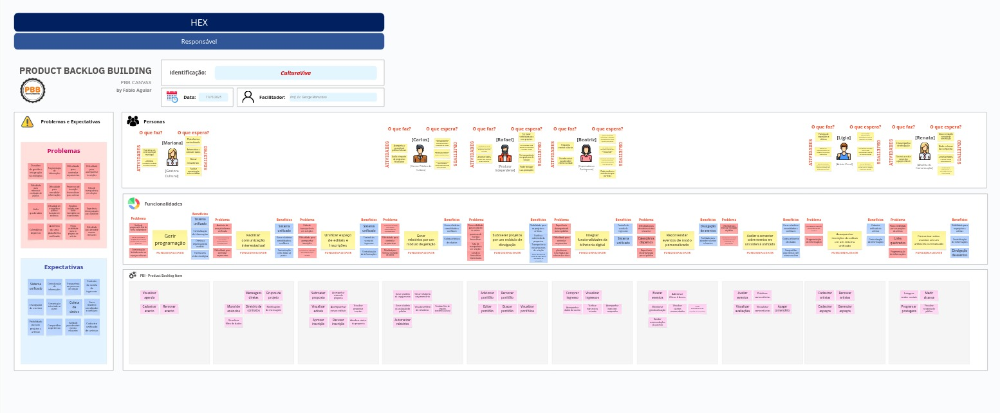
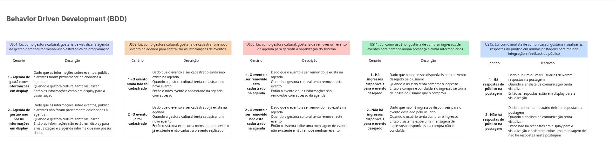
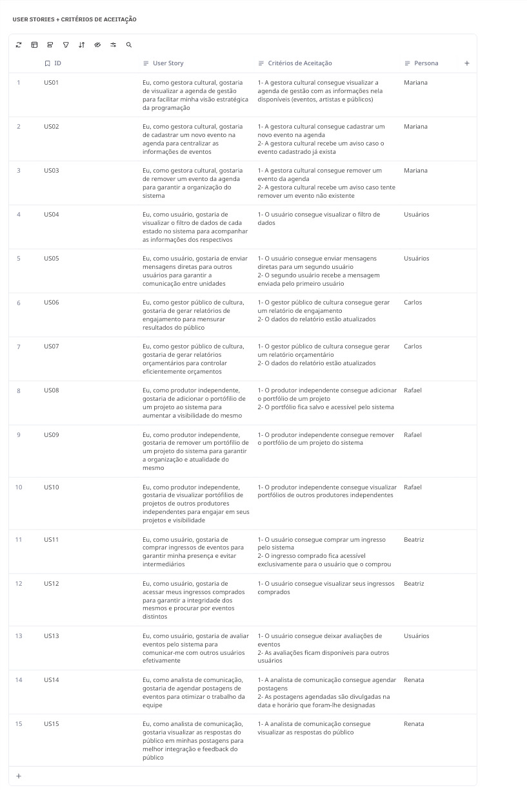
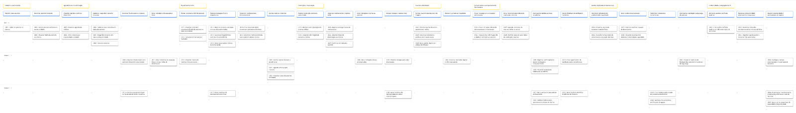
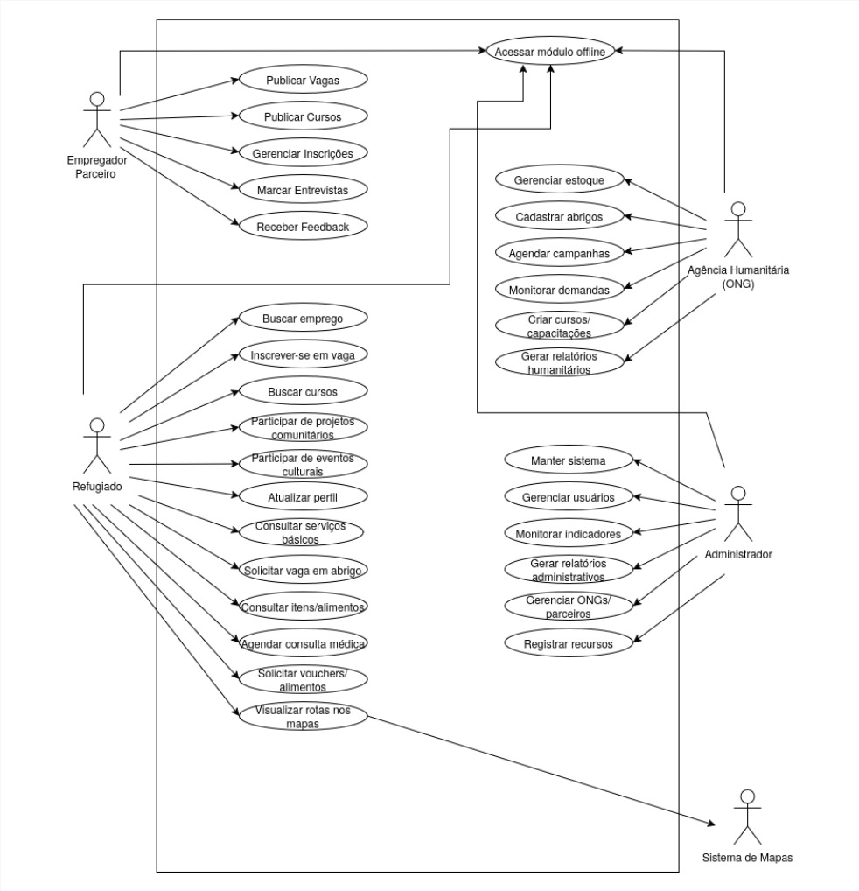

Product Backlog Building (CulturaViva)¶

Behavior Driven Development (CulturaViva)¶

User Stories¶

Story Map (HealthConnect)¶

Diagrama de Caso de Uso (HopeBridge)¶

Especificação de Caso de Uso: Participar de Eventos Culturais¶
1. Participar de Eventos Culturais¶
1.1 Breve Descrição¶
Este caso de uso permite ao refugiado(usuário) inscrever-se em um evento cultural agendado para data posterior. A partir desta funcionalidade, o usuário pode visualizar os eventos culturais que irão acontecer ou que estão acontecendo, inscrever-se para um evento futuro e acessar suas inscrições ativas em eventos.
1.2 Atores¶
- Refugiado
2. Fluxo de Eventos¶
2.1 Fluxo Principal¶
Este caso de uso é iniciado quando o refugiado (usuário) escolhe a opção “Eventos Culturais”.
2.1.1 O sistema apresenta a lista completa de eventos culturais e suas respectivas datas e horários, bem como a opção:
- acessar suas inscrições ativas em eventos [FA01].
2.1.2 O refugiado seleciona um evento cultural [FE01] [FE02].
2.1.3 O sistema apresenta a opção de se inscrever no evento agendado.
2.1.4 O refugiado se inscreve no evento [RN01].
2.1.5 O sistema exibe mensagem de inscrição registrada com sucesso [RN02].
2.1.6 O sistema disponibiliza um comprovante de inscrição ao refugiado.
2.1.7 O caso de uso é encerrado.
2.2 Fluxos Alternativos¶
2.2.1 [FA01] Acessar Inscrições Ativas
No passo 2.1.1, o refugiado optou por acessar suas inscrições ativas em eventos culturais.
2.2.1.1 O sistema apresenta as inscrições ativas do refugiado caso haja alguma.
2.3 Fluxos de Exceção¶
2.3.1 [FE01] O evento selecionado está em andamento
No passo 2.1.2, o refugiado seleciona um evento que já está em andamento, portanto não aceita mais inscrições. O sistema apresenta mensagem informando o status do evento. O sistema retorna ao passo 2.1.1.
2.3.2 [FE02] O evento selecionado está lotado
No passo 2.1.2, o refugiado seleciona um evento que não possui mais vagas para inscrições. O sistema apresenta mensagem informando indisponibilidade de vagas. O sistema retorna ao passo 2.1.1.
3. Requisitos Especiais¶
3.1 Este caso de uso deve estar disponível também no modo offline do aplicativo.
4. Regras de Negócio¶
4.1 [RN01] Vincular à conta do refugiado
O sistema deve vincular a inscrição do refugiado à sua conta no aplicativo.
4.2 [RN02] Adicionar inscrição à pagina de inscrições do refugiado
O sistema deve adicionar o evento qual o refugiado se inscreveu à página de inscrições do mesmo. Deve disponibilizar também o comprovante de inscrição.
5. Precondições¶
5.1 O refugiado deve estar cadastrado no sistema.
5.2 Os eventos devem ser previamente registrados pelo autor responsável.
6. Pós-condições¶
6.1 Todas as inscrições em eventos devem ficar registradas no sistema e disponíveis para acesso pelo Administrador.
Especificação de Caso de Uso: Cadastrar Abrigos¶
1. Cadastrar Abrigos¶
1.1 Breve Descrição¶
Este caso de uso permite que a Agência Comunitária (ONG) registre um novo abrigo na plataforma HopeBridge. O objetivo é disponibilizar informações essenciais sobre o local (capacidade, localização e serviços) para que o sistema possa mapear recursos e conectar refugiados necessitados a vagas disponíveis.
1.2 Atores¶
- Agência Comunitária (ONG)
2. Fluxo de Eventos¶
2.1 Fluxo Principal¶
Este caso de uso é iniciado quando a Agência Comunitária seleciona a opção "Cadastrar Novo Abrigo" no menu de gestão de recursos.
- O sistema apresenta o formulário de cadastro de abrigo solicitando os dados básicos e de infraestrutura.
- A Agência preenche as informações do abrigo: nome, endereço/localização, capacidade total de pessoas e horários de funcionamento.
- A Agência seleciona os serviços específicos disponíveis no local (ex: alimentação, assistência médica, água potável).
- O sistema solicita a confirmação dos dados inseridos.
- A Agência confirma o cadastro [RN01].
- O sistema valida as informações preenchidas [RN02].
- O sistema registra o abrigo na base de dados, tornando-o disponível para busca e alocação.
- O sistema exibe uma mensagem de "Abrigo cadastrado com sucesso".
- O caso de uso é encerrado.
2.2 Fluxos Alternativos¶
2.2.1 [FA01] Cadastro em Modo Offline
No passo 2.1.6, o sistema identifica que não há conexão com a internet.
- O sistema informa que o dispositivo está offline e que os dados serão armazenados localmente.
- O sistema salva o registro do abrigo no armazenamento local do dispositivo.
- O sistema exibe uma mensagem de "Cadastro salvo localmente. A sincronização ocorrerá ao retomar a conexão".
- O caso de uso é encerrado. (O sistema deve sincronizar automaticamente quando a conexão for restabelecida [RN03]).
2.3 Fluxos de Exceção¶
2.3.1 [FE01] Dados Obrigatórios Incompletos
No passo 2.1.6, o sistema identifica que campos obrigatórios (como localização ou capacidade) não foram preenchidos.
- O sistema destaca os campos faltantes e exibe uma mensagem de erro orientando o preenchimento.
- O fluxo retorna ao passo 2.1.2 para que a Agência corrija as informações.
2.3.2 [FE02] Capacidade Inválida
No passo 2.1.6, o sistema identifica que o valor inserido no campo "Capacidade" é inválido (ex: número negativo ou zero).
- O sistema exibe uma mensagem de erro informando que a capacidade deve ser um número inteiro positivo.
- O fluxo retorna ao passo 2.1.2.
3. Requisitos Especiais¶
- Interface Multilíngue: O sistema deve permitir que o cadastro seja realizado utilizando a interface em árabe ou inglês, conforme a configuração do usuário.
- Funcionamento Offline: O formulário de cadastro deve ser totalmente funcional mesmo em áreas sem conectividade.
4. Regras de Negócio¶
4.1.1 [RN01] Responsabilidade do Cadastro¶
Apenas usuários com perfil verificado de "Agência Comunitária" ou "Administrador" podem cadastrar novos abrigos, garantindo a confiabilidade das informações para os refugiados.
4.1.2 [RN02] Validação de Capacidade e Serviços¶
O sistema não deve permitir o cadastro de um abrigo sem a definição de, pelo menos, um serviço básico (água, alimentação ou pernoite) e uma capacidade máxima de atendimento maior que zero.
4.1.3 [RN03] Sincronização de Dados¶
Dados cadastrados offline devem receber uma marcação de "Pendente de Sincronização" e serem enviados ao servidor central automaticamente assim que a conectividade for restabelecida, para garantir que as agências humanitárias tenham visão em tempo real da demanda.
5. Precondições¶
- A Agência Comunitária deve estar autenticada no sistema HopeBridge.
6. Pós-condições¶
- O novo abrigo é registrado no sistema.
- As informações do abrigo (capacidade e serviços) tornam-se visíveis para os algoritmos de mapeamento que sugerem recursos aos refugiados.
7. Pontos de Extensão¶
- Não se aplica.
Especificação de Caso de Uso: Buscar Emprego¶
1. Buscar Emprego¶
1.1 Breve Descrição
Este caso de uso permite ao ator Refugiado acessar a seção de oportunidades econômicas da plataforma para localizar vagas de emprego. O sistema utiliza os dados do perfil do usuário para sugerir vagas compatíveis com suas competências e localização, além de permitir buscas manuais. O objetivo é apoiar a reintegração econômica e a autonomia financeira do refugiado.
1.2 Atores
- Refugiado (Ator Principal).
2. Fluxo de Eventos¶
2.1 Fluxo Principal
Este caso de uso é iniciado quando o refugiado escolhe a opção "Oportunidades de Trabalho" ou similar no menu principal.
- O sistema verifica a conectividade com a internet e recupera as informações de perfil do refugiado (experiência, localização).
- O sistema aplica o algoritmo de recomendação [RN01] para analisar o perfil do usuário e sugerir as opções mais adequadas.
- O sistema apresenta uma lista de vagas sugeridas ("Recomendadas para você"), seguidas por uma lista geral de oportunidades na região.
- O sistema disponibiliza filtros de busca e barra de pesquisa manual [FA01].
- O refugiado seleciona uma vaga de interesse.
- O sistema exibe os detalhes completos da vaga, requisitos e dados do empregador parceiro.
- O sistema registra a visualização da vaga para métricas de interesse [RN02].
- O caso de uso é encerrado.
2.2 Fluxos Alternativos
2.2.1 [FA01] Realizar Busca Manual
- Origem: No passo 4, o refugiado opta por não usar as sugestões automáticas.
- 2.2.1.1 O refugiado insere termos na busca ou ajusta os filtros (ex: região, tipo de trabalho).
- 2.2.1.2 O sistema atualiza a lista de vagas conforme os novos critérios inseridos [FE02].
- (Retorna ao passo 5).
2.2.2 [FA02] Acesso em Modo Offline
- Origem: No passo 1, o sistema detecta que não há conexão com a internet ou a conexão é instável.
- 2.2.2.1 O sistema notifica o usuário que o aplicativo está operando em "Modo Offline".
- 2.2.2.2 O sistema carrega as informações de vagas armazenadas localmente na última sincronização.
- (O fluxo segue para o passo 5, limitado aos dados em cache).
2.3 Fluxos de Exceção
2.3.1 [FE01] Perfil Incompleto
- Origem: No passo 2, o sistema identifica que o refugiado não preencheu dados essenciais para a recomendação.
- Ação: O sistema exibe uma mensagem solicitando o preenchimento dessas informações para melhorar as sugestões e redireciona para o caso de uso "Atualizar Perfil".
2.3.2 [FE02] Nenhuma Vaga Encontrada
- Origem: No passo 2.2.1.2, a busca manual não retorna resultados.
- Ação: O sistema exibe a mensagem "Nenhuma oportunidade encontrada com esses critérios" e sugere a visualização das vagas gerais ou cursos de capacitação. O sistema retorna ao passo 4.
3. Requisitos Especiais¶
- 3.1 O sistema deve possuir funcionalidade offline para garantir o acesso em áreas com baixa conectividade.
4. Regras de Negócio¶
- 4.1 [RN01] Algoritmo de Compatibilidade (Matching)
- O sistema deve analisar o perfil do usuário (ex: experiência em construção civil) para sugerir opções adequadas (ex: projetos de reconstrução).
- 4.2 [RN02] Monitoramento de Demanda
- O sistema deve registrar o interesse dos refugiados nas vagas para permitir que empregadores e administradores acompanhem a demanda.
5. Precondições¶
- 5.1 O refugiado deve ter realizado o registro inicial na plataforma.
- 5.2 O refugiado deve estar autenticado no aplicativo.
6. Pós-condições¶
- 6.1 O log de visualização da vaga e métricas de interesse são atualizados no sistema.
7. Pontos de Extensão¶
- 7.1 No passo 6, este caso de uso pode ser estendido pelo caso de uso "Inscrever-se em vaga".
Especificação de Caso de Uso¶
-
Criar Cursos/Capacitações¶
-
Breve Descrição
Este caso de uso permite à agências humanitárias (ONG) parceiras criarem cursos e/ou
capacitações em uma seção da plataforma. Por meio dessa funcionalidade, o usuário
poderá se inscrever tanto em projetos de campo ofertados localmente pela ONG quanto
oportunidades de qualificações.
- Atores
-
Agência Humanitária (ONG)
-
Fluxo de Eventos
- Fluxo Principal
Este caso de uso é iniciado quando à agência humanitária autorizada escolhe a opção “Criar novo Cursos/Capacitação”.
- O sistema apresenta o formulário de cadastro de cursos, bem como as seguintes opções de configuração:
- definir modalidade (online/presencial);
-
vincular a um projeto de campo existente. [FA01]
-
A Agência preenche os dados do curso (título, descrição, carga horária, requisitos).[FE01]
- A Agência define o período de inscrição e a quantidade de vagas disponíveis.
- A Agência anexa materiais de divulgação ou plano de ensino, se houver.
- A Agência confirma a publicação do curso. [FE02]
- O sistema verifica se todos os campos obrigatórios foram preenchidos corretamente e se as datas são válidas. [FA02]
- O sistema exibe mensagem de curso criado com sucesso. [FE01]
- O caso de uso é encerrado.
-
Fluxos Alternativos
- [FA01] Vincular a Projeto de Campo Existente
Ocorre quando a ONG quer conectar o curso a um projeto prático que ela já possui:
No passo 2.1.2, a Agência seleciona a opção "Vincular ao Projeto de Campo".
O sistema exibe uma lista com os projetos ativos da Agência [FE03].
A Agência seleciona o projeto desejado na lista.
O sistema preenche automaticamente o campo de "Localização" ou "Contexto" do curso com base no projeto escolhido.
O fluxo retorna ao passo 2.1.3 para continuação do preenchimento.
- [FA02] Salvar como Rascunho
Ocorre quando a ONG não quer publicar imediatamente.
No passo 2.1.6, ao invés de confirmar a publicação, a Agência seleciona a opção "Salvar como Rascunho".
O sistema valida apenas se o "Título" do curso foi preenchido.
O sistema salva as informações inseridas com o status "Rascunho" (invisível para os usuários).
O sistema exibe a mensagem "Rascunho salvo com sucesso".
O caso de uso é encerrado
- Fluxos de Exceção
- [FE01] Dados ou Datas Inválidas
Ocorre quando o sistema barra a publicação por erros de preenchimento.
No passo 2.1.7, o sistema detecta uma das seguintes situações:
- Campos obrigatórios (como Título ou Carga Horária) estão vazios.
- A "Data de Término" é anterior à "Data de Início".
- A quantidade de vagas é igual ou menor que zero.
O sistema suspende a gravação do registro.
O sistema destaca os campos com problemas em vermelho
O fluxo retorna ao passo 2.1.3 ou 2.1.4 para que a Agência faça as correções.
- [FE02] Erro no Anexo de Material
Ocorre falha ao subir o PDF ou imagem.
No passo 2.1.5, o sistema identifica que o arquivo enviado é muito grande (excede o limite permitido) ou está em formato não suportado (ex: .exe).
O sistema exibe mensagem de erro.
O fluxo permanece no passo 2.1.5 para nova tentativa de upload.
- [FE03] Nenhum Projeto Disponível para Vínculo
Ocorre dentro do Fluxo Alternativo FA01.
No passo 2 de FA01, o sistema busca no banco de dados e não encontra nenhum projeto de campo ativo cadastrado para aquela Agência.
O sistema exibe um alerta.
Cadastre um projeto primeiro ou continue a criação do curso sem vínculo.
O sistema retorna ao passo 2.1.2 do fluxo principal, desmarcando a opção de vínculo.
- Requisitos Especiais
O sistema deve limitar o tamanho dos arquivos anexados (materiais de divulgação/ementas) a no máximo 10MB por curso
- Regras de Negócio
- [RN01] Validação de Vínculo Institucional
O sistema deve verificar se o usuário possui perfil vinculado a uma Agência Humanitária com cadastro ativo.
- [RN02] Consistência Cronológica.
A Data de Início deve ser igual ou posterior à data atual; a Data de Término deve ser posterior à de Início; o Prazo de Inscrição deve ser anterior ao Início do curso.
- [RN03] Validação de Materiais Formatos permitidos: PDF, JPG, JPEG, PNG.
Tamanho máximo: 10 MB. O arquivo deve estar íntegro (livre de vírus/scripts).
- Precondições
- O representante da Agência deve estar autenticado no sistema
-
A Agência Humanitária deve estar com o cadastro ativo na plataforma.
-
Pós-condições
- O curso ou capacitação é registrado no sistema com o status correspondente ("Publicado" ou "Rascunho")
UC01 — Publicar Vagas¶
1. Publicar Vagas¶
1.1 Breve Descrição¶
Este caso de uso permite que o Empregador Parceiro publique uma nova vaga de emprego no sistema HopeBridge. O empregador fornece informações da vaga e o sistema valida os dados antes de disponibilizá-la aos candidatos.
1.2 Atores¶
• Ator Principal: Empregador Parceiro
• Atores Secundários: Nenhum
2. Fluxo de Eventos¶
2.1 Fluxo Principal¶
2.1.1 O empregador seleciona a opção “Publicar Vaga”.
2.1.2 O sistema exibe o formulário de criação de vaga com campos obrigatórios [RN01].
2.1.3 O empregador preenche as informações da vaga.
2.1.4 O empregador confirma o envio.
2.1.5 O sistema valida as informações inseridas [RN01][FE01][FE02].
2.1.6 O sistema registra a vaga, gera ID único e salva no banco [RN02].
2.1.7 O sistema disponibiliza a vaga aos refugiados.
2.1.8 O sistema exibe mensagem de confirmação.
2.1.9 O caso de uso é encerrado.
2.2 Fluxos Alternativos¶
[FA01] Salvar como Rascunho
Origem: passo 2.1.3
2.2.1.1 O empregador seleciona “Salvar como rascunho”.
2.2.1.2 O sistema valida campos mínimos para rascunho.
2.2.1.3 O sistema salva a vaga em estado “RASCUNHO”.
2.2.1.4 O sistema confirma a criação do rascunho.
2.3 Fluxos de Exceção¶
[FE01] Campos obrigatórios ausentes
Origem: passos 2.1.3 ou 2.1.5
O sistema identifica ausência de informações obrigatórias.
O sistema destaca os campos e solicita correção.
Retorna ao passo 2.1.3.
[FE02] Data limite inválida
Origem: 2.1.5
O sistema detecta data já expirada ou formato incorreto.
Retorna ao passo 2.1.3.
3. Requisitos Especiais¶
3.1 O formulário deve suportar múltiplos idiomas.
3.2 Deve permitir salvar rascunhos offline.
4. Regras de Negócio¶
[RN01] Campos obrigatórios: título, descrição, requisitos, modalidade e localidade.
[RN02] Identificador único no formato: JOB-AAAA-MM-DD-SEQ.
5. Precondições¶
5.1 O empregador deve estar autenticado.
6. Pós-condições¶
6.1 A vaga fica disponível ou salva como rascunho.
6.2 Log de criação salvo.
Especificação de Caso de Uso: Solicitar Vaga em Abrigo¶
1. Solicitar Vaga em Abrigo¶
1.1 Breve Descrição¶
Este caso de uso permite ao servidor autorizado solicitar a ligação de um refugiado à uma vaga em um abrigo selecionado. A partir desta funcionalidade, o refugiado pode visualizar os abrigos disponíveis e suas vagas, solicitar a matrícula em uma vaga e enviar seus dados para análise. A matrícula do refugiado no abrigo não é realizada diretamente ao realizar a solicitação; ela fica pendente até análise posterior.
1.2 Atores¶
• Refugiado
2. Fluxo de Eventos¶
2.1 Fluxo Principal¶
Este caso de uso é iniciado quando o refugiado seleciona a opção “Abrir Solicitação de Vaga em Abrigo”.
2.1.1 O sistema apresenta a lista de abrigos ao refugiado, bem como o número de vagas disponíveis e as seguintes opções:
• selecionar abrigo;
• configurações de filtro [FA01].
2.1.2 O refugiado seleciona o abrigo na lista.
2.1.3 O sistema verifica as informações do refugiado antes de direcioná-lo para a tela do abrigo [RN01][FE01].
2.1.4 O sistema apresenta as informações do abrigo e a opção “Solicitar Vaga”.
2.1.5 O refugiado seleciona “Solicitar Vaga”.
2.1.6 O sistema verifica a elegibilidade do refugiado para aquela vaga [FE02].
2.1.7 O sistema registra a solicitação, gera um protocolo e grava as informações do protocolo no log [RN03].
2.1.8 O sistema envia a requisição de cadastro do refugiado para o abrigo.
2.1.9 O sistema apresenta uma mensagem indicando que a solicitação foi concluída com sucesso.
2.1.10 O caso de uso é encerrado.
2.2 Fluxos Alternativos¶
2.2.1 [FA01] Configurar filtros de busca¶
No passo 2.1.1 o refugiado optou por iniciar a configuração de filtros de busca.
2.2.1.1 O sistema apresenta as opções de filtro disponíveis [RN02].
2.2.1.2 O refugiado seleciona e aplica os filtros desejados.
2.2.1.3 O sistema atualiza a lista dos abrigos aplicando os filtros configurados.
(Retorna ao passo 2.1.2).
2.3 Fluxos de Exceção¶
2.3.1 [FE01] Refugiado com Informações Cadastrais Incompletas¶
Nos passos 2.1.3 o sistema identifica que o refugiado não está cadastrado ou possui informações necessárias ausentes no perfil. O sistema apresenta mensagem informando a necessidade de completar o cadastro. O sistema redireciona o refugiado à tela de cadastro. Este caso de uso é encerrado.
2.3.2 [FE02] Refugiado Não Elegível¶
No passo 2.1.6 o sistema identifica que o refugiado não é elegível para a vaga. O sistema apresenta uma mensagem informando que o refugiado não é elegível e um hyperlink de redirecionamento para uma documentação oficial detalhando os requisitos para elegibilidade em uma vaga. Este caso de uso é encerrado.
3. Requisitos Especiais¶
3.1 Este caso de uso deve estar disponível também via dispositivo móvel.
4. Regras de Negócio¶
4.1.1 [RN01] Informações Necessárias Cadastradas¶
O sistema deve verificar se o refugiado possui todas as informações necessárias para matrícula em um abrigo já adicionadas em seu perfil.
4.1.2 [RN02] Disponibilidade de Filtros¶
As seguintes opções de filtro de busca devem estar necessariamente disponíveis no sistema:
• Localização
• Vagas Disponíveis
• Permanência Oferecida
• Necessidades Especiais
• Idiomas Falados
• Acomodação Religiosa
4.1.3 [RN03] Registro de Protocolo e Auditoria¶
Toda solicitação deve gerar protocolo único no formato AAAAMMDD-HHMMSS-SEQ e registro completo em log contendo refugiado, abrigo, informações cadastrais e ID da requisição realizada ao abrigo.
5. Precondições¶
5.1 O sistema deve ter acesso à conexão com a internet.
6. Pós-condições¶
6.1 Todas as operações devem ser registradas em log para fins de auditoria.
6.2 A solicitação deve ser enviada para análise e aprovação.